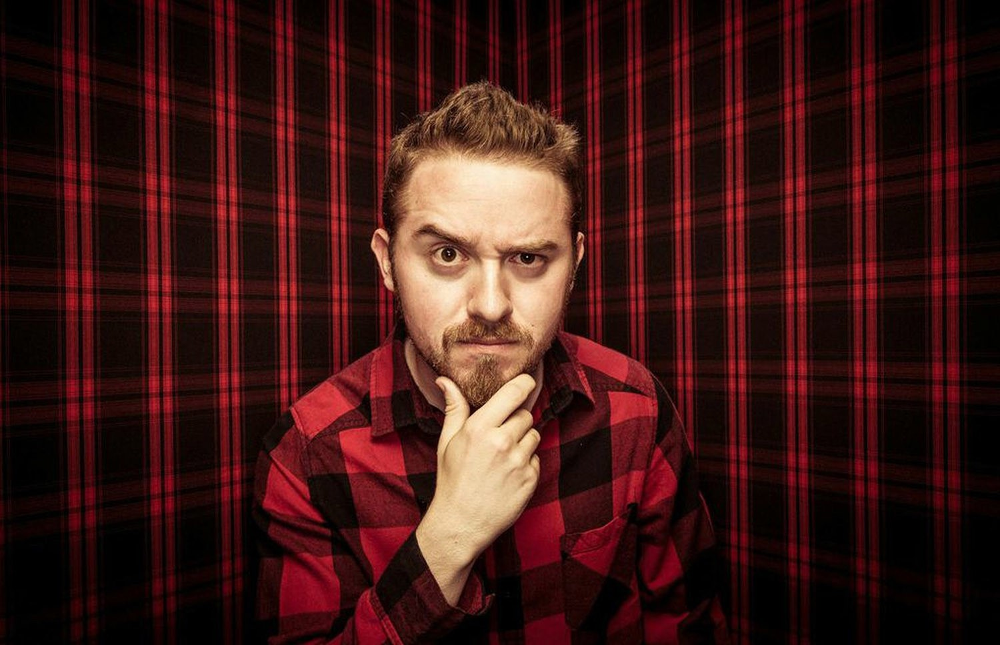
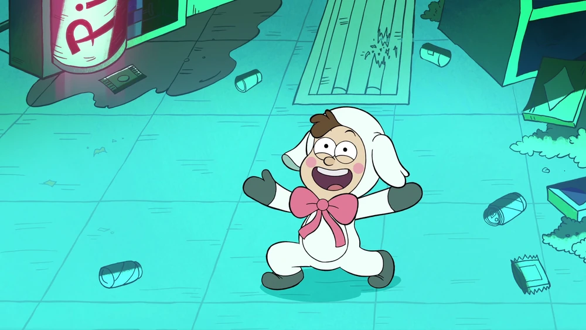
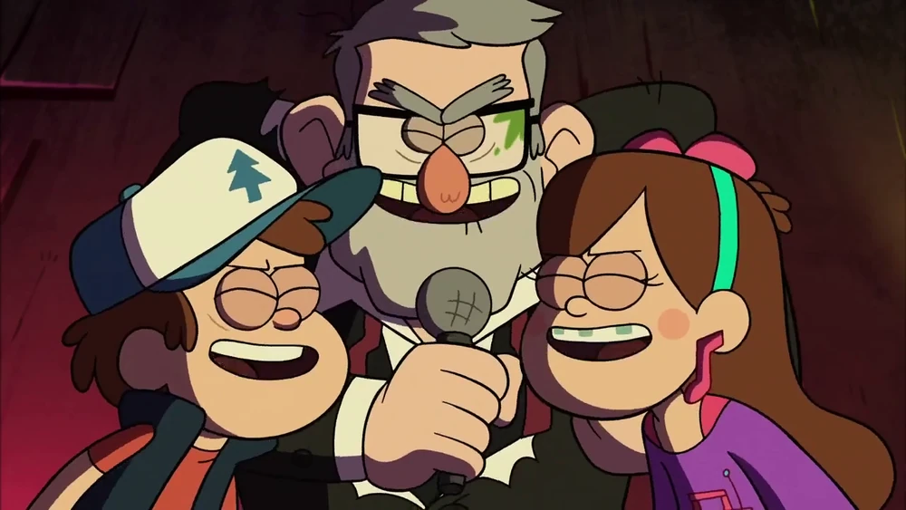
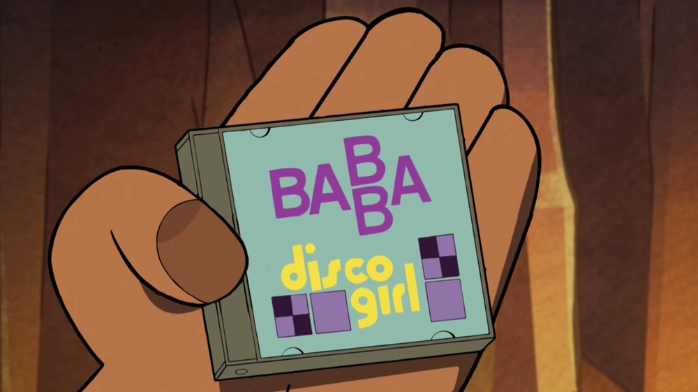
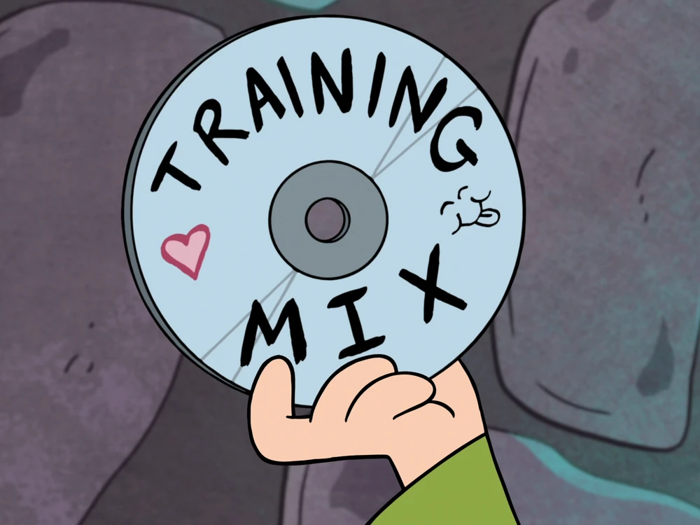
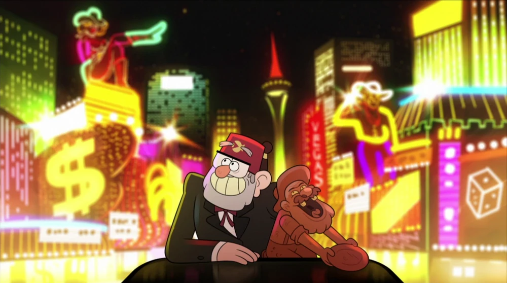
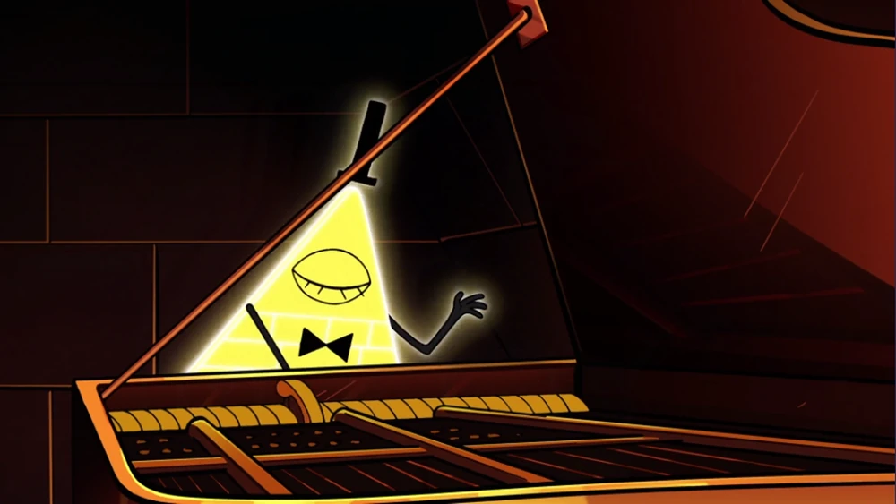

Alex Hirsch, el creador de la serie

Alexander Robert Hirsch (nombre real y completo) nació el 18 de junio de 1985 en
Piedmont, California.
Desde pequeño, mostró un gran interés por lo sobrenatural y la animación. Creció junto a su hermana
gemela, Ariel, quien fue su inspiracion para crear al personaje de Mabel. Entre los 9 y
los 13 años,
Hirsch y su hermana gemela se quedaban con su tía abuela Lois, en su cabaña en el bosque durante el
verano. Estas experiencias sirvieron más tarde como inspiración para crear su opera prima.
Hirsch asistió al Instituto de Artes de California (CalArts), donde estudió animación y
conoció a varios
futuros colegas en la industria, como J.G. Quintel (Creador de Un show más),
Pendleton Ward (Creador de
Hora de aventura) y Justin Roiland (Creador de Rick & Morty).
Durante su tiempo en CalArts, trabajó en varios proyectos y
cortometrajes, incluyendo Off the Wall, que combinaba técnicas de animación
tradicional con live
action.
Después de graduarse en 2007, Hirsch trabajó en Las maravillosas desventuras de Flapjack
como guionista
gráfico y escritor. También colaboró en la serie Pecezuelos de Disney Channel. Su gran
oportunidad llegó
cuando Disney Channel le ofreció desarrollar su propia serie, lo que resultó en la creación de Gravity
Falls. La serie, inspirada en sus propias experiencias y su relación con su hermana, se estrenó en 2012
y rápidamente se convirtió en un éxito.
Además de Gravity Falls, Hirsch ha trabajado en otros proyectos como Inside Job para
Netflix y ha
colaborado en series como The Owl House. También ha prestado su voz a varios personajes
en diferentes
series y peliculas animadas como Angry Birds 2, Galaxia Wonder, Star vs Las fuerzas del mal e incluso la
propia su propia serie.
Producción
La producción de Gravity Falls fue un proceso complejo y apasionante. Inspirado en su propia infancia,
Hirsch creó el mundo de Gravity Falls con el objetivo de combinar humor y misterio en una historia
animada para todas las edades. La producción comenzó en 2010 y la serie se estrenó en junio de 2012,
convirtiéndose rápidamente en un éxito en Disney Channel.
- Idea y Guion: Alex Hirsch se inspiró en el popular programa Los Simpson, de la cual
aprendió que la
animación no tiene que ser solo para niños, sino que puede tomar un carácter «satírico y
observacional basado en un sentido de interacción entre los personajes» Se centró en crear
personajes únicos y una historia con arcos de misterio, lo que no era común en series animadas de
Disney. Hirsch explicó en una entrevista que durante la producción de la primera
temporada, un episodio típico se concebía en una sala reservada a los guionistas, donde se
presentaba una simple sinopsis y, a partir de ahí, se definía la estructura dramática y se
modificaba la trama para incluir una subtrama centrada en los personajes, algo que expresó como lo
más difícil.
- Creación de Personajes y Estilo Visual: Los personajes fueron inspirados en
personas reales y
experiencias de la vida de Hirsch. Dipper y Mabel están basados en él y su hermana. El estilo visual
de la serie es una mezcla de elementos de los años 80 y 90, con una apariencia que recuerda a viejas
películas y series de misterio, pero con un toque moderno.
- Animación: La animación se realizó mediante una combinación de técnicas digitales y
tradicionales.
La mayor parte de la producción se hizo en estudios de animación en Burbank, California, aunque la
animación en sí fue encargada a estudios internacionales, como Rough Draft Studios en Corea del Sur,
que manejó la animación fotograma por fotograma. Cuando una secuencia se consideraba demasiado
importante para los estudios externos, era animada internamente por la artista de storyboards y la
supervisora Dana Terrace
- Pistas y Detalles Ocultos: Una de las características que hizo destacar a Gravity
Falls fue la
inclusión de mensajes ocultos, códigos, y pistas en cada episodio. Hirsch y el equipo incluían
elementos secretos, como criptogramas y mensajes en clave, para que los fanáticos pudieran descifrar
misterios más grandes. Estos elementos ayudaron a mantener a los fans interesados y a generar
teorías alrededor de la trama.
- Voces:Hirsch hizo las voces de varios personajes, incluido el querido Tío Stan,
Soos, McGucket y Bill Cipher. Otros personajes fueron interpretados por un
talentoso elenco de actores de voz, incluyendo a Jason Ritter como Dipper y Kristen Schaal como
Mabel.
- Producción: La producción de cada episodio llevaba tiempo, con meses dedicados a la
escritura, diseño, storyboard, grabación de voces y animación. En una entrevista concedida a Oh My
Disney, Hirsch afirmó que ya tenía planeado el principio, el nudo y el desenlace de la historia
cuando la presentó por primera vez. En un principio pensó que tendría dos o tres temporadas. Sin
embargo, nunca antes había creado una serie de televisión y, después de experimentar lo
«increíblemente agotador» que era, en un principio quería terminarla después de la primera y, en
última instancia, con un cliffhanger. Después de que se estrenara y se convirtiera en un gran éxito
comercial, empezó a replantearse su decisión.
Directores
- John Aoshima: fue el director principal de la primera temporada de Gravity
Falls, trabajando
estrechamente con Alex Hirsch para darle vida a la visión de la serie. Aoshima trabajó en
varios aspectos de la serie, desde la narrativa hasta el diseño visual de escenas. Colaboró
en el desarrollo de momentos tanto intensos como humorísticos, permitiendo que la serie
lograra un equilibrio único entre el suspenso y la comedia. Su experiencia previa en otras
series de animación, como American Dad! y The Simpsons, le dio las herramientas necesarias
para ayudar a hacer de Gravity Falls una serie con profundidad visual y una trama compleja.
- Aaron Springer: Conocido por su trabajo en Bob Esponja y Phineas & Ferb,
Springer dirigió
varios episodios
de Gravity Falls. Su experiencia en animación y comedia ayudó a darle un toque especial a la
serie, combinando su habilidad para el humor visual con los elementos de misterio y acción
que requería la historia.
- Joe Pitt: Fue uno de los directores de supervisión de la serie. Joe Pitt
trabajó en varios
episodios y supervisó la calidad y consistencia de la animación, asegurando que cada
capítulo mantuviera el estilo distintivo de la serie. Pitt también se ocupó de aspectos
técnicos y de continuidad visual.
- Matt Braly: dirigió varios episodios de la segunda temporada. Braly es un
director con experiencia en animación y eventualmente fue el creador de la serie Amphibia de
Disney Channel. En Gravity Falls, su habilidad para construir personajes y situaciones
humorísticas contribuyó a algunos de los momentos más memorables de la serie.
- Stephen Sandoval: fue director de varios episodios de la segunda temporada
y se destacó por su enfoque en
la narrativa visual y el desarrollo de la historia. Su trabajo ayudó a construir la
atmósfera misteriosa y a enfatizar los momentos de suspenso en la serie. Supervisó tanto la
animación como la puesta en escena de varias secuencias importantes.
Música
El tema de apertura de Gravity Falls es uno de los más reconocibles de las series animadas modernas. El
compositor principal de la música de la serie fue Brad Breeck, quien trabajó con el creador Alex Hirsch
para
desarrollar un sonido único que acompañara tanto los momentos misteriosos como los divertidos de la
serie.
Breeck compuso esta pieza para capturar la esencia de la serie: un equilibrio entre lo enigmático y lo
entretenido. La melodía incorpora elementos de folk y country, con un ritmo acelerado que recuerda las
aventuras de los personajes. La elección de instrumentos, como el banjo y la armónica, añade una
atmósfera
de "pueblo pequeño sureño" con secretos escondidos.
La banda sonora en general utiliza una combinación de instrumentos acústicos y sintetizadores para crear
un
ambiente único. Breeck usó una variedad de estilos musicales para acompañar cada episodio, adaptándose
al
tono de la escena, ya fuera de suspenso, humor o drama. Los elementos de música electrónica también
ayudaron
a darle un toque moderno y emocionante a ciertas escenas sobrenaturales o de acción.
Otra caracteristica de la serie es su variado repertorio de canciones que parodian distintos tipos de
generos
musicales:
- Baile de la Oveja ("Lamby Lamby Dance" en EEUU): es una danza y canción que Dipper
aprendió a
realizar para su familia a temprana edad. Consiste en que el bailarín lleva un traje de cordero, y
canta
una canción corta y alegre.

- Reinas de la Medianoche (Taking Over Midnight): es una canción cantada por Mabel,
Dipper y Stan. Con
el fin de deshacerse de una horda de zombis,
el trío necesitaba una armonía de tres partes, que rompería los cráneos de los zombis.

- "Reina Disco" ("Disco Girl" en EEUU) es una canción del grupo pop de Islandia para
chicas BABBA. Es
el
tema favorito de Dipper.

- La Canción de Entrenamiento (Training Mix en EEUU) es un disco que Mabel pone en
una grabadora
mientras
intenta ayudar al Tío Stan a mejorar su apariencia y forma de ser que lo ayuda a conquistar a Linda
Susan. Al mismo tiempo los Hombrestauro le enseñan a Dipper como ser un hombre.

- Dinero (Two Kings en EEUU) es una canción escuchada en los creditos del episodio
"Soos y la Chica
Real".
se escucha
aquella canción cuendo Stan y su figura del Viejo Minero estaban festejando juntos de viaje
por Las Vegas.

- Yo te veré (originalmente We'll Meet Again) es una canción cantada por Bill Cipher"
para dedicarsela
a
Ford. La canción fue compuesta por Hughie Charles, escrita por Ross Parker y cantada por
la famosa cantante británica Vera Lyn, 1939. La canción tuvo mucho éxito durante la Segunda Guerra
Mundial y servía para motivar a los soldados a que lucharan por sus familias y parejas.
